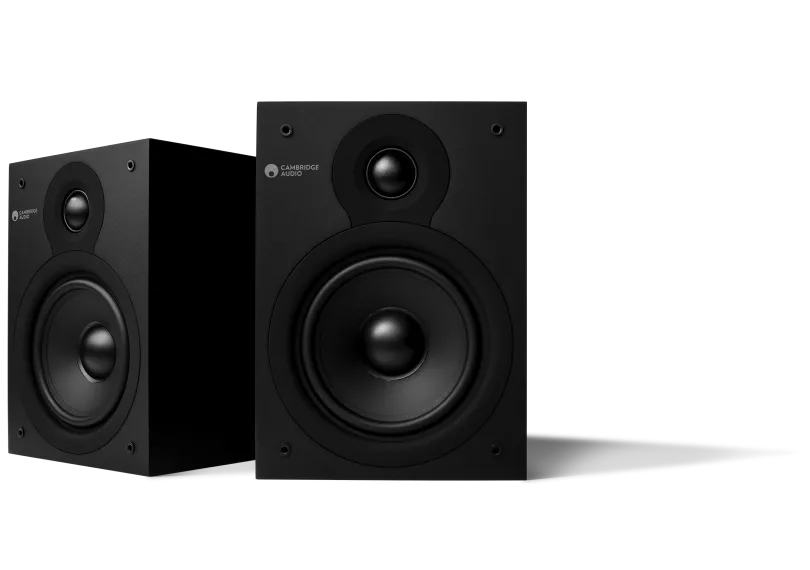
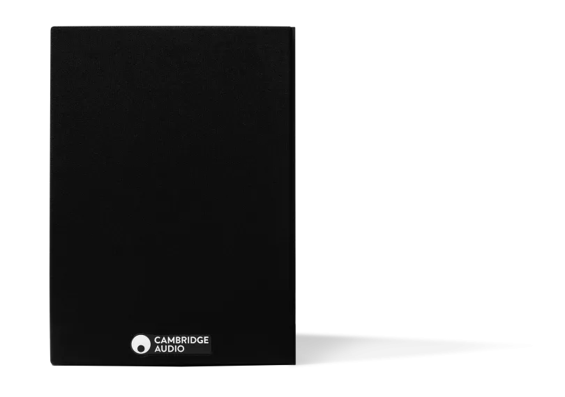
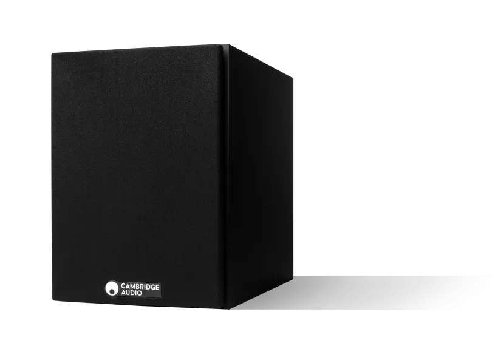
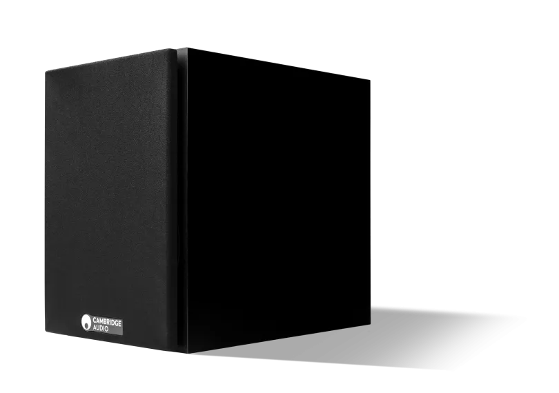
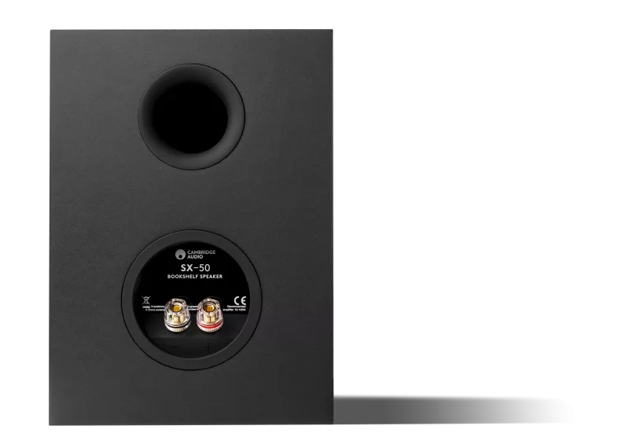
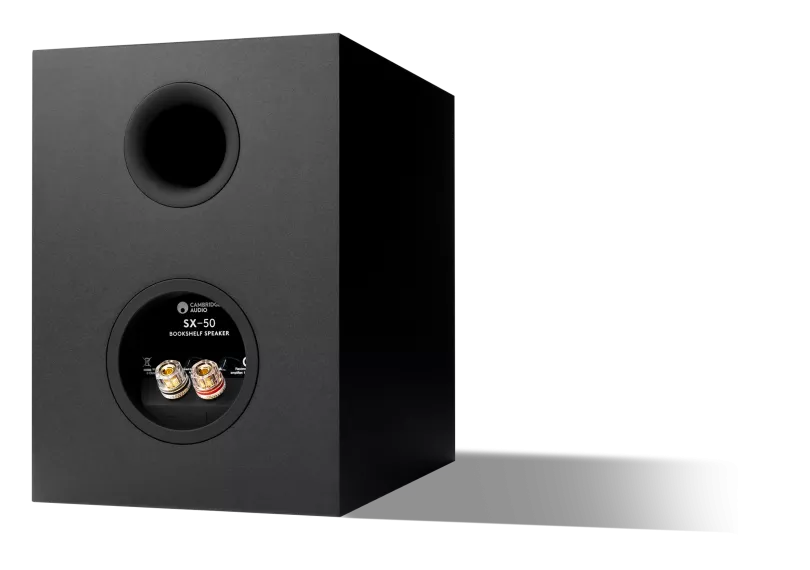
SX-50
コンパクトなスペースにフィットしながらパフォーマンスに妥協しない設計。SX-50は、小さな部屋で音楽に命を吹き込む、リッチでディテール豊かなステレオサウンドを提供します。本棚、デスク、メディアユニットの上に設置しても、真のHi-Fiクオリティを実現します。
販売店を探す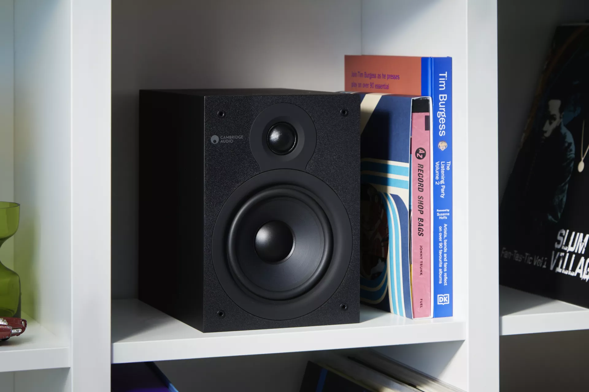
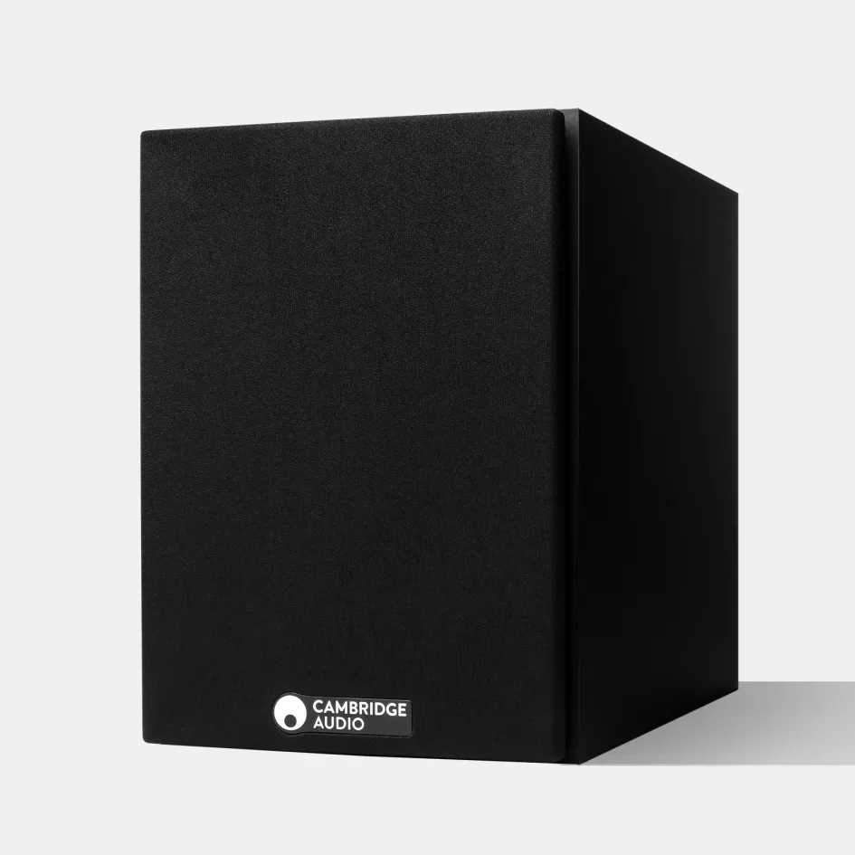
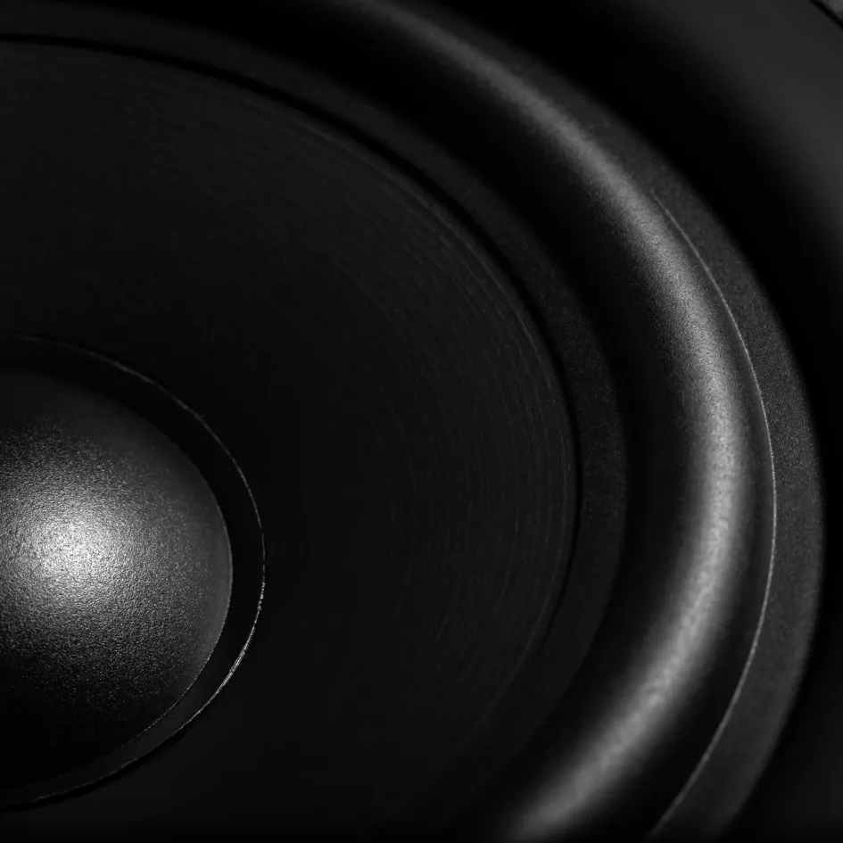
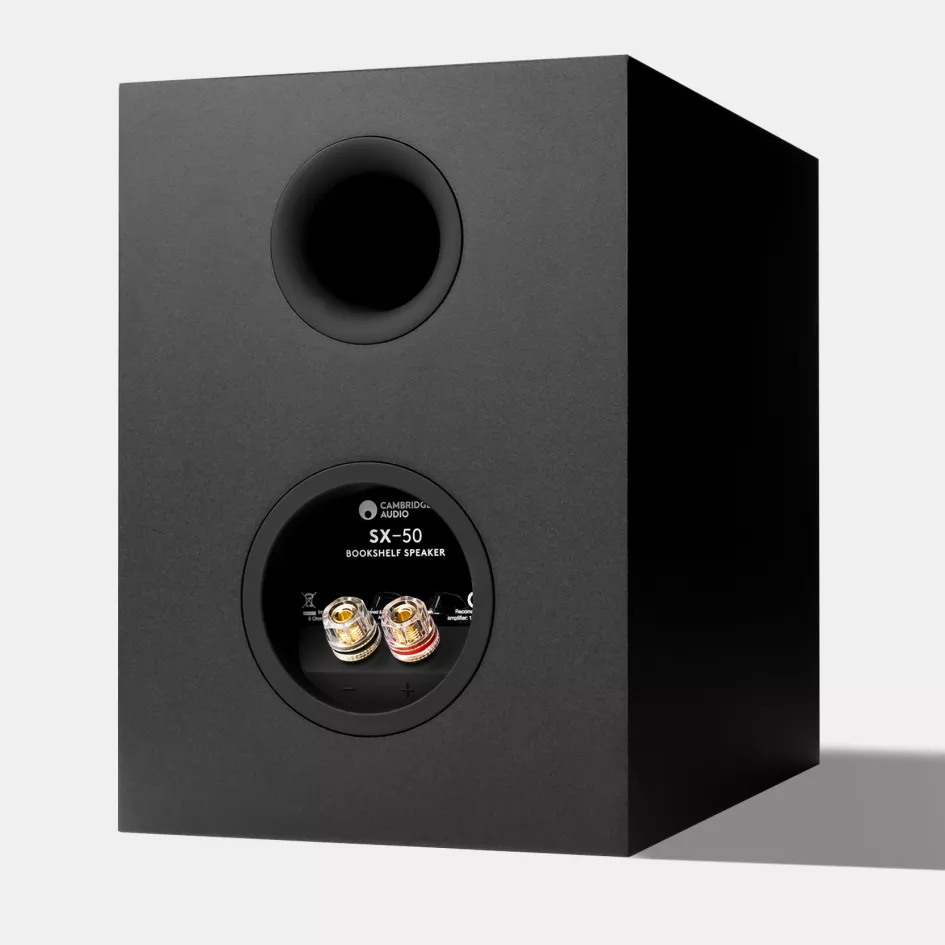
堅牢な基礎構造
Hi-Fiスピーカーエンジニアリングはキャビネットから始まります。コンピュータ支援モデリングで設計されたSX-50の剛性MDFキャビネットは、不要な共振を最小限に抑え——音楽のすべてのディテールが正確に向けられるべき場所に届きます。
大きなサウンド、小さなフットプリント
135mm（5.25インチ）処理済みペーパーコーンウーファーと25mm（1インチ）シルクドームツイーターが、温かみのある中域とクリスプな高域を持つバランスの取れた自然なサウンドを実現——コンパクトなスペースに最適です。
2つのドライバー、一つの声
SX-50の最適化されたクロスオーバーチューニングにより、各ドライバーが完璧に調和して動作し、位相精度を維持しながら、奥行きと透明感のある没入型ステレオイメージを実現します。
「活発なスピーカーで提供するものも多く、SX-50はお買い得で、どんな部屋のインテリアにもふさわしい存在です。」
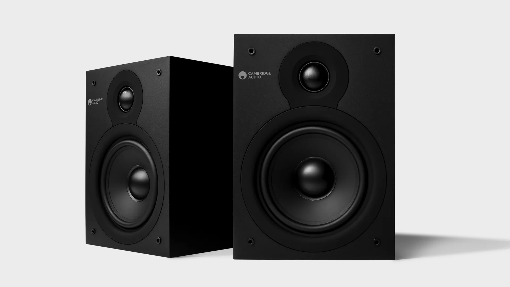
HI-FI PERFORMANCE, MINIMAL SPACE
Hi-Fiパフォーマンス、ミニマルスペース
SX-50のコンパクトなデザイン、最適化されたドライバー配置、バスレフチューニングが、どこにでも収まるほど小さなサイズで、ボディ感のあるディテール豊かなサウンドを創り出します。ステレオセットアップでもホームシネマシステムの一部としても、SX-50はコンパクトパッケージでシグネチャークラリティを提供します。
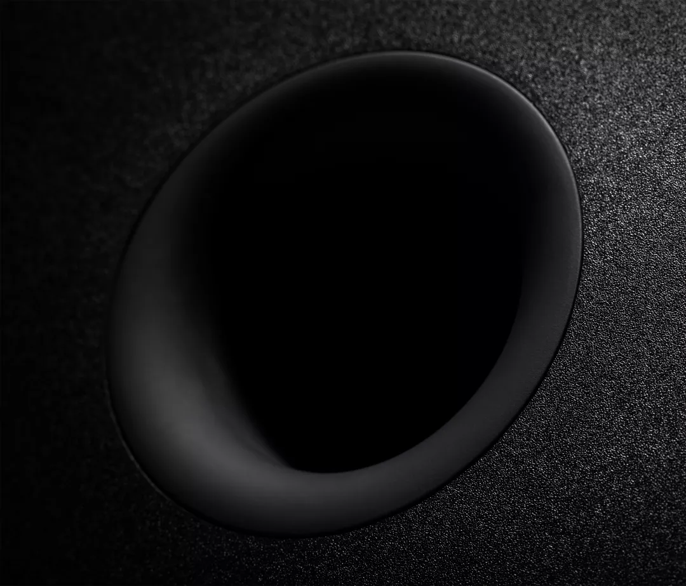
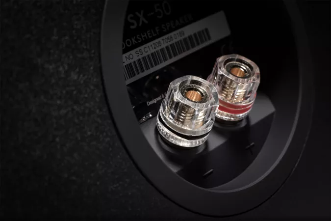
小さなスピーカー、印象的なサウンド
精密にチューニングされたドライバー
135mm（5.25インチ）処理済みペーパーコーンウーファーと1インチシルクドームツイーターが、温かみのある中域とクリスプな高域を持つバランスの取れた自然なサウンドを実現。
拡張された周波数特性
50Hzまで到達し、コンパクトなサイズにもかかわらず印象的な低域の深さを実現。
バスレフチューニング
リアポートが低域レスポンスを向上させ、タイトで制御されたバスを維持しながら温かみと深みを加えます。
剛性MDFキャビネット
共振と内部振動を最小限に抑え、クリーンで歪みのない再生を実現。
高品質バインディングポスト
バナナプラグとベアワイヤ接続に対応し、信頼性の高いHi-Fi接続を確保。